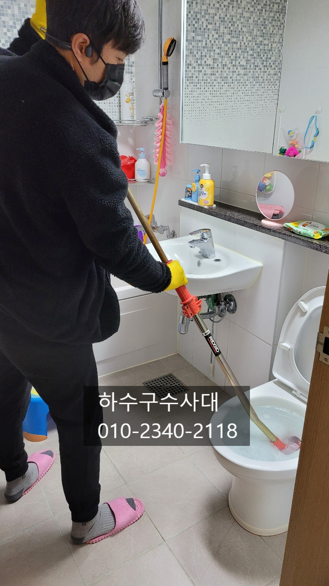
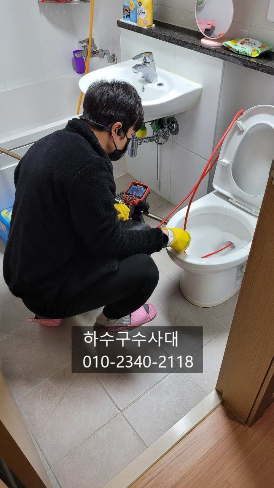
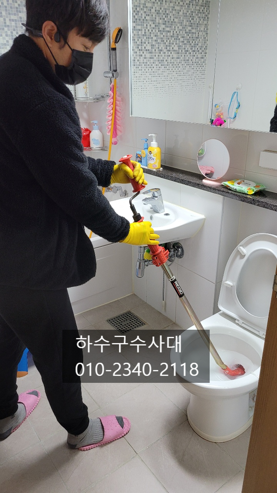
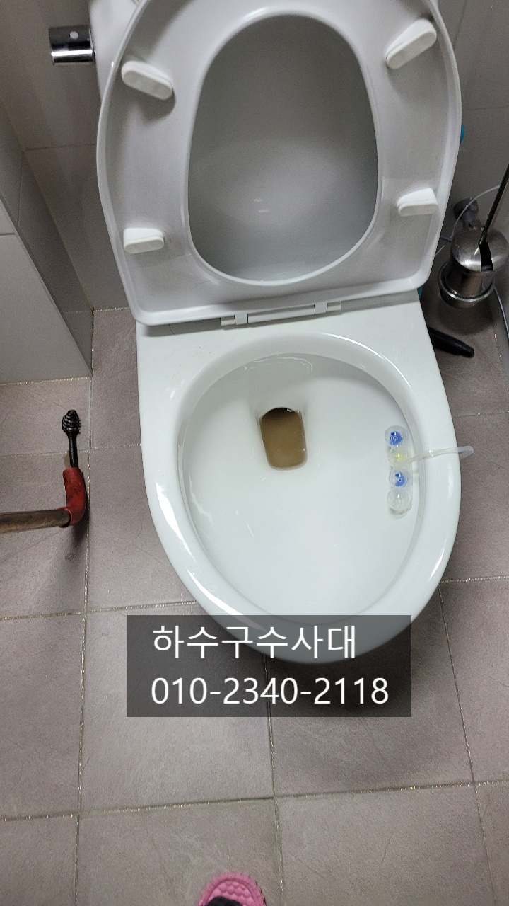
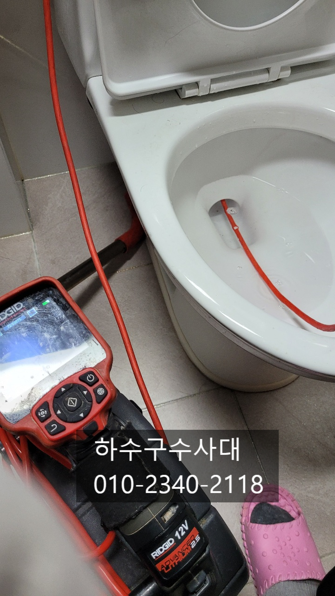
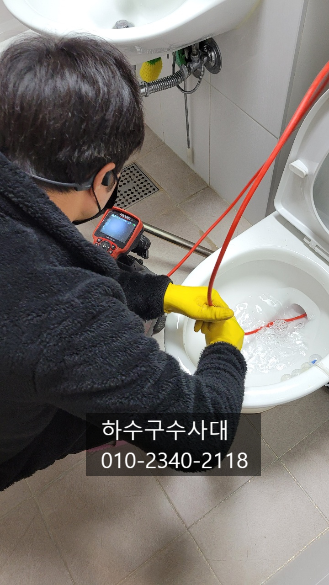

🏠 변기막혔을때 변기뚫는법
용인 변기막힘 전문 시공 후기

📋 작업 개요
- 위치: 용인
- 서비스 유형: 변기막힘, 하수구막힘, 배관막힘, 뚫는업체, 배관청소
- 작업 일시: 2021. 11. 27. 2:17
- 업체명: 하수구수사대 (010-5615-2118)
🔍 문제 상황
변기막혔을때 변기뚫는법
안녕하세요
"하수구수사대" 이른시간에 인사드립니다^^
살면서 하수구가 막히는 일보다는
변기가 막히는 일이 더 많은데요
변기가 막히게되면 생리적인 증상을
해결 할 수가 없게 됩니다.
특히 원룸이나 오피스텔의 경우 변기가
하나뿐이라 더욱더 불편함을 느끼실 거에요.
변기가 막히는 원인은 다양한데요
휴지양이 많아 막히거나
물티슈를 넣거나
음식물을 버리거나
면봉이나 이물질이 들어가거나
변기가 노후화되거나 변기부속문제 등등
다양한 원인이 있습니다.
영상처럼물을 레버를 내리면 물이 내려가지않고 차오르는경우가

🔎 원인 분석
💡 전문가 진단: 하수구수사대010-2340-2118
있는데요 보통은 단순막힘의 이유가 많습니다.
이런경우 관통기라는 장비로 뚫고 난뒤 내시경으로
안쪽을 보거나 휴지를 3~5 번정도 내려보면서
테스트를 해주게 됩니다.
휴지나 변으로 막힌경우는 압축기로도
해결이 가능한데요 반복적이 압축기펌핑만으로도
뚫리는경우도 있습니다.
아니면 시간이 지난뒤 휴지나 변이 풀리게된후
펌핑을 해주면 쉽게 뚫리는 경우도 있답니다.
일반적으로 가정집에서 사용하는 관통기는
길이가 짧고 얇은게 대부분이라
막힌부분까지 못가거니 막힌 이물질을
건들지못하는 경우가 많습니다.
전문가들이 쓰는 장비는 배관까지
밀어내기때문에 왠만한 변기막힘을 해결이
가능합니다.
관통기로 뚫어서 물이 내려가면 내시경으로
변기 깊숙한 곳까지 보거나 휴지를

🔧 작업 과정
여러번 물을 내려서 테스트를 해주어
이물질이 없는지 체크를 해줍니다.
변기가 자주막힌다면 무언가 원인이
있게 마련인데요 예를들면 소변을 볼땐
이상이 없는데 대변을 보거나 휴지를
넣으면 바로 막힘증상이 나타난다면
변기 안쪽에 이물질이 있어
변이나 휴지가 걸려 못나간다고 생각하면
됩니다. 이런경우 직접 빼내는건 어려운데요
전문가들은 석션장비나 또는 내시경으로
빼는 경우도 있답니다.
석션이나 내시경으로 보면서 빼지못하는 경우도
있는데 이런경우는 변기를 뜯어서 이물질을
빼낸후 다시 변기를 재설치를 하는 경우도 발생합니다.
가끔 변기를 청소하기위해 깊숙한곳까지
청소솔을 넣는 분들이 계시는데
굉장히 위험한 행동입니다.
깊숙히 넣다가 솔 앞쪽부분이 부러져
끼어서 안나오는 경우도 많기 때문이에요.
이런경우 변기를 뜯어도 빼기가 어려울수도
있으니 제발 변기깊숙한 곳까지 청소는 하지
말아주세요^^
내시경카메라로 변기깊숙한 곳까지 확인을
하였는데 별다른 이물질을 보이지 않고
휴지테스트를 5번해주었는데 물이
시원하게 잘 내려갑니다.
변기가 이제야 정상적으로 내려갑니다^^
변기가 막히면 언제든지


✅ 작업 완료
"하수구수사대"에 상담해주시면
최대한 정보를 드릴테니 언제든지 연락주세요^^
"하수구수사대"는 수도권 전지역에서
활동하고 있으니 부르시면
곧장 출동하겠습니다
하수구수사대
010-2340-2118


⚠️ 하수구 배관 막힘 예방 및 관리 가이드
- ✅ 머리카락, 비닐, 물티슈 등 물에 분해되지 않는 이물질은 하수구 유입을 절대 금지해 주세요.
- ✅ 하수구 거름망을 씌우고 모여진 이물질은 주기적으로 쓰레기통에 바로 비워주셔야 합니다.
- ✅ 배관 노후가 심할 경우 이물질이 더 쉽게 걸리므로 주기적인 배관 세척(고압세척 등)을 권장합니다.
- ✅ 작업 후 1년 이내 재발 시 하수구수사대에서 무상 A/S 보증 서비스를 제공합니다.
💡 핵심 정리
- 확실한 장비 작업(내시경 점검 및 샤프트 스케일링)으로 원인을 뿌리 뽑습니다.
- 작업 후 1년 이내에 동일한 부위 재발 시 100% 무상 A/S 서비스를 보장합니다.
- 서울 · 경기 · 인천 전 지역에 24시간 언제든 긴급 출동할 수 있도록 항시 대기 중입니다.
❓ 자주 묻는 질문 (FAQ)
🚨 용인 변기막힘 문제로 고민이신가요?
정확한 원인 진단과 확실한 시공으로 재발 없는 해결을 약속드립니다.
24시간 긴급 출동 | 서울 · 경기 · 인천 전지역 | 1년 내 재발 시 무상 A/S